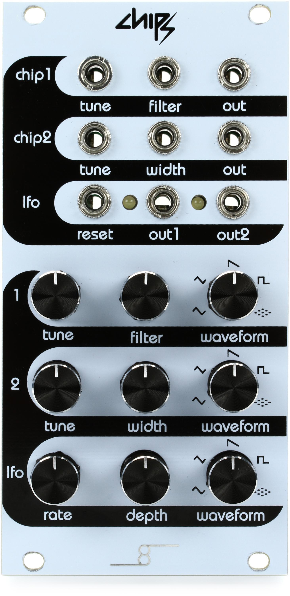

Chipz

Manufacturer: Cre8audio
Type: VCO / LFO — Dual Oscillator
HP: 12 | Depth: 30mm
Power: +12V 80mA / -12V 5mA
Overview
Chipz is a dual oscillator with a lo-fi, chip-tune character. Each oscillator runs independently and can be switched into LFO range. Hard sync between oscillators is available for classic sync sweep sounds.
Inputs & Outputs
| Jack | Signal | Notes |
|---|---|---|
| V/OCT 1 | 1V/oct | Pitch CV for OSC 1 |
| V/OCT 2 | 1V/oct | Pitch CV for OSC 2 |
| FM 1 | CV | Linear FM into OSC 1 |
| FM 2 | CV | Linear FM into OSC 2 |
| SYNC | Gate | Hard sync OSC 2 to OSC 1 |
| OUT 1 | Audio | OSC 1 output |
| OUT 2 | Audio | OSC 2 output |
| MIX OUT | Audio | Both oscillators mixed |
Controls
| Control | Function |
|---|---|
| FREQ 1 / FREQ 2 | Coarse frequency per oscillator |
| FINE 1 / FINE 2 | Fine tune per oscillator |
| WAVE 1 / WAVE 2 | Waveform select (square, saw, triangle, noise) |
| LFO toggle | Drops oscillator into sub-audio LFO range |
Patching Notes
Classic detuned pair: Patch same V/OCT source into both V/OCT inputs, nudge FINE 2 slightly — mix both outputs for fat detuned tone.
LFO modulation: Switch OSC 2 into LFO mode, patch OUT 2 into FM 1 or a filter CV input for self-contained modulation without a separate LFO module.
Sync sweep: Patch OSC 1 OUT → SYNC, sweep FREQ 2 while modulating OSC 1 pitch for hard sync sounds.